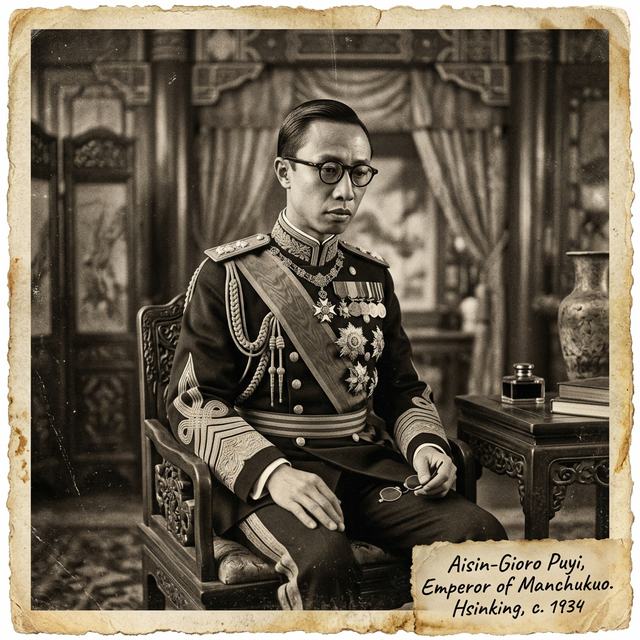

極機密
卷宗 006
溥儀
從皇帝到公民：紫禁城外的傀儡
他是中國兩千年帝制的最後一個象徵。這份檔案將揭示，這位「漢奸」皇帝與「模範公民」標籤背後，一個時代棋子的真實掙扎。
📂 檔案閱覽室
真實史實：歷史現場的另一面
📖
歷史課本說： 溥儀喪心病狂，主動把東北出賣給日本，是個十惡不赦的賣國賊。
點擊解密檔案 ➔
📂
解密真相： 他確實有復辟執念，但起因是被馮玉祥無故驅逐出宮，在恐懼中投江。到了滿洲後，他才發現自己完全被關東軍軟禁，連見誰吃什麼都由不得自己，毫無任何實權。
點擊翻回課本
📖
歷史課本說： 溥儀在戰犯管理所深刻認罪，被偉大理念感化，真心改造成模範公民。
點擊解密檔案 ➔
📂
解密真相： 「改造」很大程度是生存本能。從小在宮廷鬥爭長大的他，面對死亡威脅，完美「表演」了悔過角色，以瘋狂自我貶低換取活命。
點擊翻回課本人物列傳

溥儀
(1906 - 1967)
時代的棋子從皇權崩潰到傀儡生涯
被撕毀的契約： 1924年馮玉祥撕毀優待條件，武裝驅逐溥儀。這摧毀了他對民國的信任，將他推向了唯一的「保護者」日本人。
滿洲國的囚徒： 1932年赴東北，原以為恢復祖業，卻發現是關東軍才是太上皇。他的護軍被繳械，甚至被逼奉祀天照大神，備受折磨。
戰犯與公民： 戰後被俘，在管理所十年歲月中，為了求生寫下《我的前半生》。最終作為「改造成功」標牌，度過了晚年。
📚 關鍵參考史料
- 溥儀，《我的前半生》
- 莊士敦 (Reginald Johnston)，《紫禁城的黃昏》
⚔️ 軍事實力 50
💰 國家主權 50
📖 歷史定位 50
📻
進度
📡 INCOMING TELEGRAM
📜
局勢推演結果
軍事實力
國家主權
歷史定位